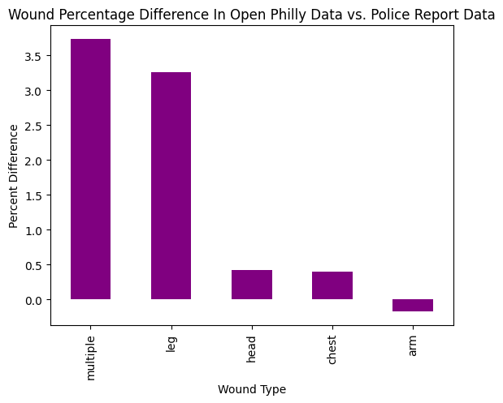
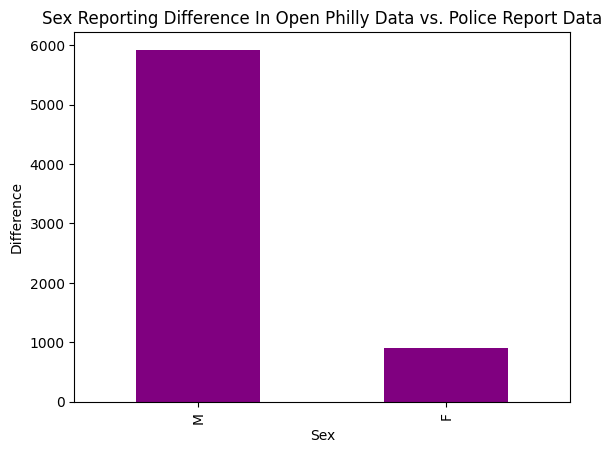
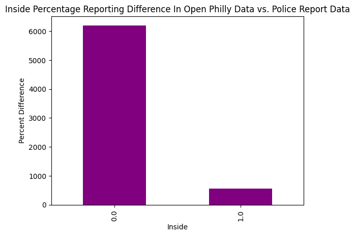

import pandas as pd
import geopandas as gpd
import numpy as np
import camelot
import calendar
import re
import matplotlib.pyplot as pltshootings_df = pd.read_csv('shootings.csv')
philly_df = pd.read_csv('openphilly_data_shootings.csv')## How much of all shootings come from just a few districts
shoot_dist = shootings_df["dist"].value_counts()
total = shoot_dist.sum()
top5_percent = shoot_dist.head(5).sum() / total * 100
shoot_dist.head(10)dist
25.0 2111
22.0 1991
24.0 1716
35.0 1381
39.0 1314
15.0 1284
12.0 1269
19.0 1225
14.0 919
18.0 841
Name: count, dtype: int64print(f'The total number of shootings that occured in top 5 ditrcits is {total}')
print(f'Percentage of all shootings that occurred in the top 5 districts is {top5_percent}')The total number of shootings that occured in top 5 ditrcits is 17514
Percentage of all shootings that occurred in the top 5 districts is 48.60682882265616shootings_df["wound"].value_counts().head()wound
Multiple 5334
Leg 3314
Head 1484
Chest 1022
Arm 957
Name: count, dtype: int64philly_df["wound"].value_counts().head()wound
multi 1706
Multiple 1144
leg 976
Leg 717
head 557
Name: count, dtype: int64shootings_df["wound"] = shootings_df["wound"].str.lower()
philly_df["wound"] = philly_df["wound"].str.lower()shootings_df["wound"] = shootings_df["wound"].replace("multi", "multiple")
philly_df["wound"] = philly_df["wound"].replace("multi", "multiple")shoot_wound_pct = shootings_df["wound"].value_counts(normalize=True) * 100
philly_wound_pct = philly_df["wound"].value_counts(normalize=True) * 100
shoot_wound_pct.head()wound
multiple 30.904581
leg 19.464636
head 8.745817
chest 5.982462
arm 5.670936
Name: proportion, dtype: float64philly_wound_pct.head()wound
multiple 27.173707
leg 16.205721
head 8.325440
arm 5.843910
chest 5.588180
Name: proportion, dtype: float64diff = shoot_wound_pct.head() - philly_wound_pct.head()
print(diff)wound
arm -0.172974
chest 0.394283
head 0.420377
leg 3.258915
multiple 3.730873
Name: proportion, dtype: float64## A bar chart showing % of difference for each wound type for both datasets
diff.sort_values(ascending=False).plot(kind="bar",color="purple")
plt.title("Wound Percentage Difference In Open Philly Data vs. Police Report Data")
plt.xlabel("Wound Type")
plt.ylabel("Percent Difference")
plt.xticks(rotation=90)
plt.show()
shootings_df.columns Index(['the_geom', 'the_geom_webmercator', 'objectid', 'year', 'dc_key',
'code', 'date_', 'time', 'race', 'sex', 'age', 'wound',
'officer_involved', 'offender_injured', 'offender_deceased', 'location',
'latino', 'point_x', 'point_y', 'dist', 'inside', 'outside', 'fatal',
'lat', 'lng'],
dtype='str')philly_df.columnsIndex(['the_geom', 'the_geom_webmercator', 'objectid', 'year', 'dc_key',
'code', 'date_', 'time', 'race', 'sex', 'age', 'wound',
'officer_involved', 'offender_injured', 'offender_deceased', 'location',
'latino', 'point_x', 'point_y', 'dist', 'inside', 'outside', 'fatal',
'lat', 'lng'],
dtype='str')shoot_sex = shootings_df["sex"].value_counts().head()
print(shoot_sex)sex
M 15608
F 1882
Name: count, dtype: int64philly_sex = philly_df["sex"].value_counts().head()
print(philly_sex)sex
M 9684
F 982
Name: count, dtype: int64diff_sex = shoot_sex - philly_sex
print(diff_sex)sex
M 5924
F 900
Name: count, dtype: int64## A bar chart showing % of each wound type for both datasets
diff_sex.sort_values(ascending=False).plot(kind="bar",color="purple")
plt.title("Sex Reporting Difference In Open Philly Data vs. Police Report Data")
plt.xlabel("Sex")
plt.ylabel("Difference")
plt.xticks(rotation=90)
plt.show()
shoot_inside = shootings_df["inside"].value_counts()
print(shoot_inside)inside
0.0 16219
1.0 1123
Name: count, dtype: int64philly_inside = philly_df["inside"].value_counts()
print(philly_inside)inside
0.0 10016
1.0 562
Name: count, dtype: int64diff_inside = shoot_inside - philly_inside
print(diff_inside)inside
0.0 6203
1.0 561
Name: count, dtype: int64## A bar chart showing % of inside shots
diff_inside.plot(kind="bar",color="purple")
plt.title("Inside Percentage Reporting Difference In Open Philly Data vs. Police Report Data")
plt.xlabel("Inside")
plt.ylabel("Percent Difference")
plt.xticks(rotation=90)
plt.show()